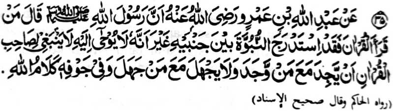

Miyakathitayan ko Abdullah ibn-e-Amr (Radhiallaho ‘Anho) a mata-an a so Rasulollah (Sallallaho ‘Alaihi wa Sallam) na pitharo iyan, “Saden sa matiya sa Qur’an na sabenar a miyakaparoli sa ilmo a kananabi-i apiya da sekaniyan toroni sa Wahi na di patot ko bigan sa sabot ko Qur’an o ba di pakiphawala ko tao a pawal o di na ba di nggola-ola sa ola-ola o da-a meleng iyan a lagid o manga boda, a so rareb iyan a ndodon so Katharo o Allah.”
Sabap sa so kipethoronen ko Wahi na miyapos ko Rasulollah (Sallallaho ‘Alaihi wa Sallam), na daden pen a khitoron a Wahi. Ogaid na sabap sa so Qur’an na Katharo o Allah, na titho den a kapadadaleman sa ‘ilmo a Nabuwwat (kananabi-i), na o aden a tao a katago-an sangka-iya a ‘ilmo, na paliyogaton so kapharangay niyan sa tanto a mapiya, ago kapananggila-i niyan ko manga rarata a ola-ola.
So Fudhail ibn-e-Ayaz (Rahmatullahi ‘Alaihi) na miyatharo iyan a so Hafiz sa Qur’an na siran-i ma-awid ko pandi o Islam, na sabap ro-o na di ron patot o ba: